À la suite d’une navigation d’abord à toute vitesse depuis la Martinique (toujours sans aucun poisson pêché), puis dans les calmes sous le vent de la Dominique, nous voilà amarrés à une bouée dans la « sunset bay ». Accueillis dans le mouillage par une longue averse, nous profitons d’une éclaircie pour sauter dans notre annexe et nous rendre à terre découvrir notre terrain de jeu pour les deux prochaines semaines.
Perché en haut des falaises, tout au bout d’une pointe surplombant la mer avec un horizon infini vers l’ouest, nous découvrons le bâtiment (la ruine) où s’est installé KWA (Keep Walking Association). Ce bâtiment est l’ancien restaurant d’un hôtel, détruit par un cyclone, il y a une dizaine d’années.
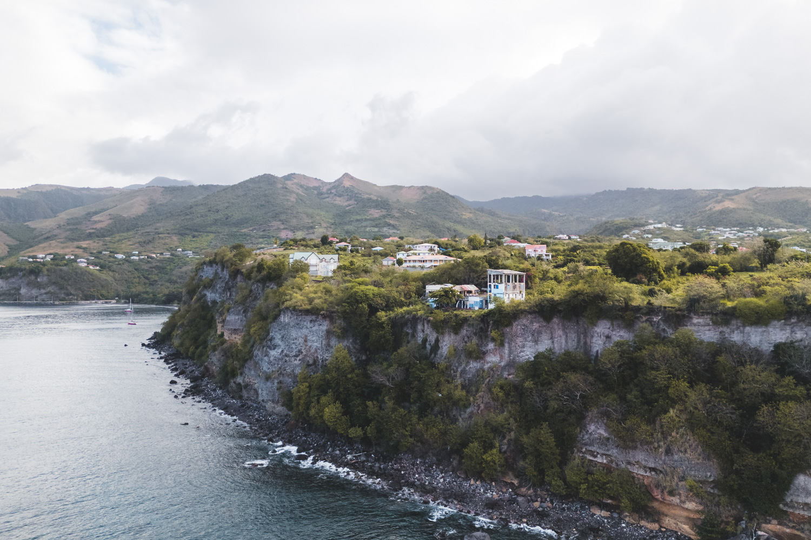
Si vous avez suivi le projet depuis le départ, vous vous souvenez sans doute que nous avions embarqué des prothèses de jambes en pièces détachées à Brest avant note départ, puis aux Canaries pour un second chargement. Ce matériel vient de Nav’Solidaire, une association qui récupère en France des prothèses de jambe qui ne sont plus utilisées et les achemine de manière propre (à la voile) en Gambie (Afrique de l’ouest) où ces prothèses ont une seconde vie avec de nouveaux patients sur place.
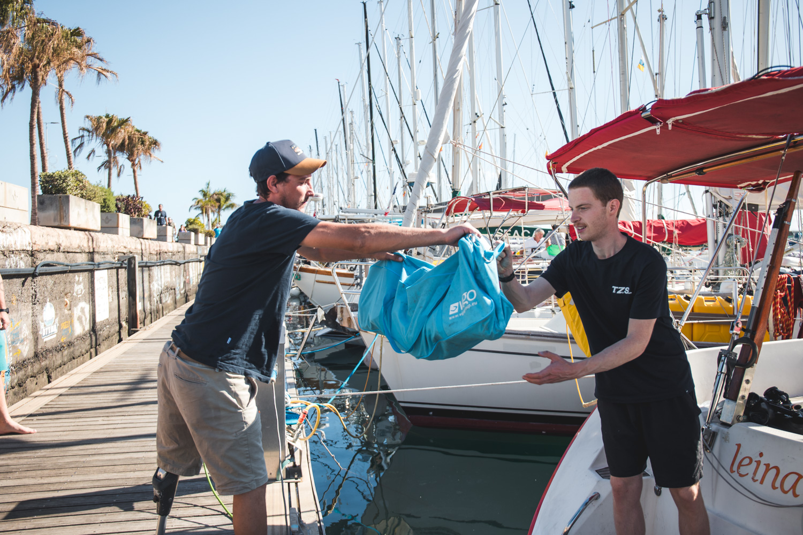
Initialement, nous devions donc participer à ce transport de matériel à destination de la Gambie. Finalement, pour des questions d’assurance du bateau, nous allons acheminer ce matériel en Dominique pour KWA.
KWA est donc une association de Français qui œuvrent en Dominique pour fabriquer des prothèses aux amputés dominiquais. En effet, sur cette île, il n’y a aucun prothésiste. Les amputés doivent donc se rendre à l’étranger pour se faire appareiller. Additionné au coût de la prothèse, il devient impossible pour la grande majorité des personnes, de se faire appareiller. L’objectif de KWA est d’offrir la possibilité à des amputés d’obtenir gratuitement une prothèse et donc de remarcher !
Actuellement, l’association est en train de rénover un bâtiment pour en faire ses locaux : atelier de fabrication de prothèses, espace de rééducation et logement pour les bénévoles orthoprothésistes en mission.
Nous découvrons donc ce chantier sur lequel une vingtaine de bénévoles s’activent quotidiennement pour reconstruire le bâtiment. Nous y rencontrons une grande diversité de profils travaillants tous de concert dans une ambiance chaleureuse. Vous pouvez les découvrir dans cette vidéo.
Nous rencontrons enfin Marc, le fondateur de l’association avec qui nous n’avions échangé que par téléphone jusqu’à présent, ainsi que Philippe et Eric, tous deux orthoprothésistes et cofondateurs de l’association avec Marc.
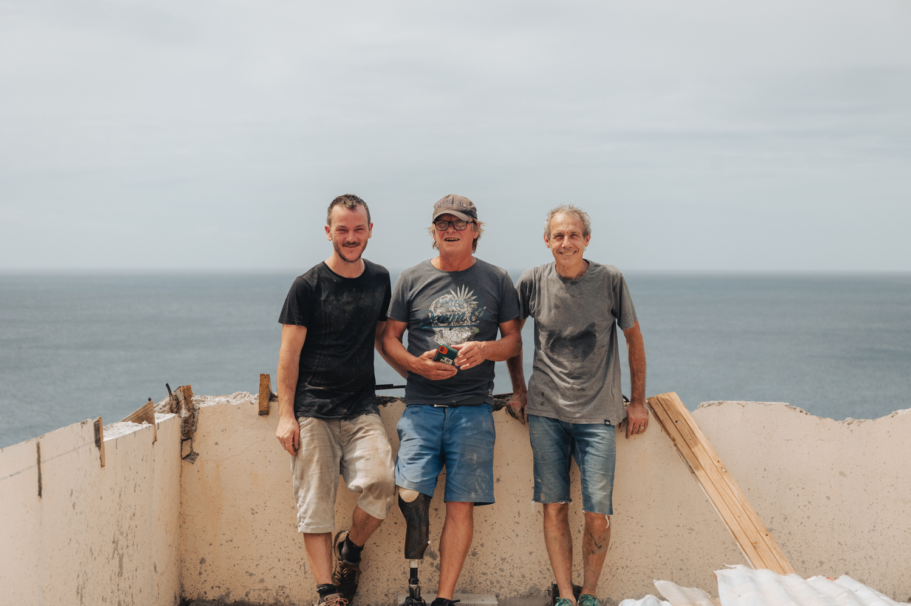
Dès le lendemain de notre arrivée, mardi matin, nous nous mettons au travail. En effet, nous n’avons pas seulement transporté les prothèses, nous avons prévu de donner un coup de main à KWA pendant les deux semaines qui viennent. Après avoir discuté avec Marc, il s’est avéré que l’association était intéressée par un grand rafraîchissement de ses supports de communication afin d’être mieux armés dans leurs recherches de fonds et les aider à se faire connaître un peu plus.
Dès la première heure, Clément et Félicien sortent les caméras, trépieds, micros et autres filtres ND pour capturer leurs premières images et recueillir les premiers témoignages. Dans le même temps, les premiers patients arrivent et les orthoprothésistes s’affairent autour d’eux, enchaînant moulages d’emboîtures et ajustement de prothèses. De mon côté, je m'attaque avec une petite équipe au rangement de leur atelier. Une petite pièce très poussiéreuse dans laquelle est entreposé tout le matériel nécessaire à la réalisation des prothèses et à la prise en charge des patients. Allant des dizaines de béquilles, quelques fauteuils roulants jusqu'aux éléments constituants les prothèses comme les pieds, les manchons, les articulations... Sans oublier les nécessaires de soin ainsi que les outils permettant de fabriquer les prothèses, les réparer, mais aussi… reconstruire le bâtiment !
Après le passage des premiers patients, Clément et Félicien trouvent l'emplacement idéal pour mener leurs interviews. Pas trop de bruit, un fond uni et un toit pour s'abriter de la pluie qui passe (très) régulièrement ! Toute la journée, les interviews s'enchaînent et tout le monde y passe ! L'ensemble des bénévoles présents sur le chantier ainsi que Philippe et Éric. En fin de journée, tout le monde est bien fatigué et nous décidons de rentrer nous poser au bateau pour la soirée.
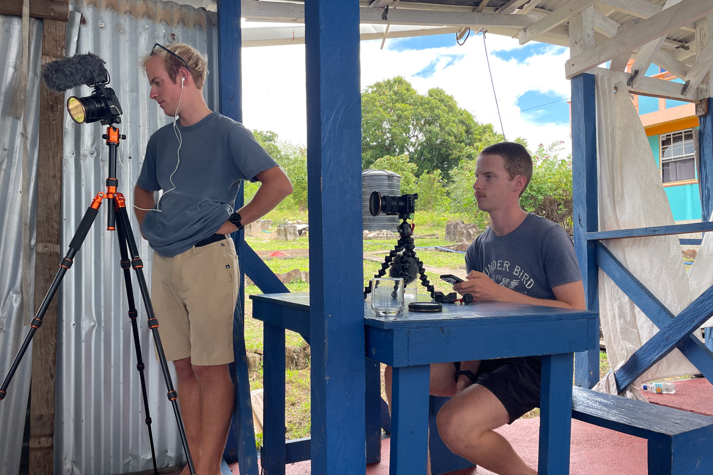
Mercredi, notre deuxième journée pleine sur place, est une journée importante pour KWA. Dans la matinée, une entreprise doit amener le béton afin de couler la dernière dalle de l'étage du bâtiment. Cette étape importante dans la rénovation est dans toutes les bouches depuis notre arrivée et doit être d'une certaine manière le point d'orgue de la mission. Tant par le côté spectaculaire de l'opération que par son côté symbolique dans l'avancée des travaux. Un petit stress se fait sentir sur le chantier : le Béton arrivera-t-il bien aujourd’hui ? En effet, tant que les camions ne sont pas là, rien n’est sûr… Pendant cette attente matinale, nous avons l’opportunité de réaliser la dernière interview et pas des moindres, celle de Marc lui-même ! Finalement, le béton arrive et tout le monde s’affaire pour aider à couler la fameuse dalle. Le drone survole la scène pendant que ceux qui ont des bottes étalent, égalisent et lissent le béton fraîchement coulé. Finalement, une fois la dalle coulée, il reste encore une bonne quantité de béton dans une des toupies. Démarrage d’un nouveau chantier express pour bétonner un petit espace pouvant servir de parking supplémentaire sur le côté du bâtiment.
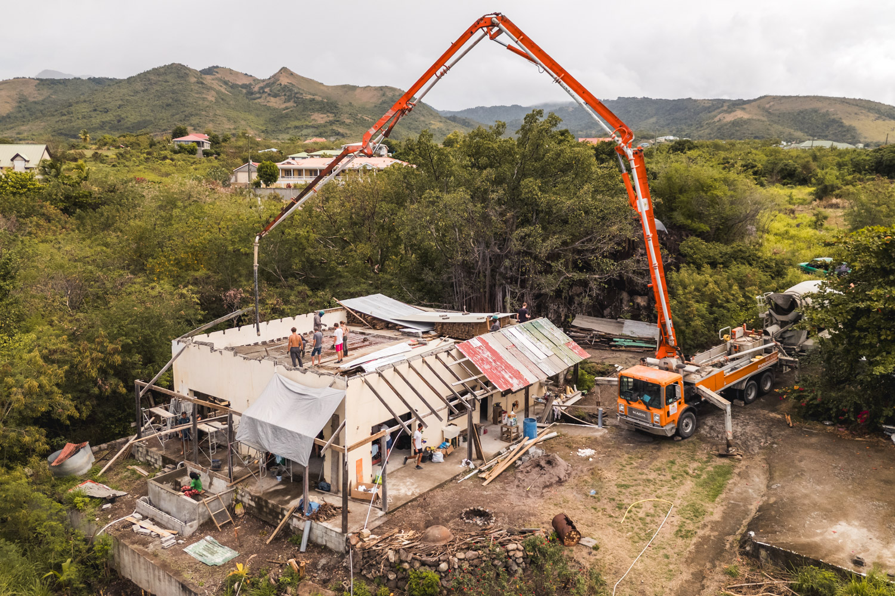
Suite à cette matinée intense qui est pour une grande partie de l’équipe de bénévoles, la conclusion de leur travail sur place, nous partons à la découverte du sud de l’île. Nous sommes 12 à partir, répartis sur les deux voiliers : Tsanteleina et Red Cloud (bateau du projet Exocet, un autre équipage étudiant réalisant une boucle atlantique, sur un bateau rouge eux aussi !). L’objectif était d’atteindre une ferme de coraux avant la tombée de la nuit. Finalement, avec le manque de vent et malgré une régate à couteaux tirés entre les deux équipages, nous arrivons au mouillage de nuit. Ce sera l’occasion de passer une bonne soirée sur les bateaux avant d’aller à terre le lendemain.
L’objectif du lendemain est de se rendre tout au sud, à Scotts Head, où se trouve un spot de plongée exceptionnel en raison de ses tombants abrupts tout proche de la côte. Nous amenons alors le matériel de plongée ainsi que le caisson étanche pour réaliser des images sous-marines. Clément à ses idées en tête et parvient une fois de plus à sortir des clichés exceptionnels !!
Pour nous y rendre, nous devons faire du stop… à 12 ! Pas si simple direz-vous… Nous nous séparons donc en plusieurs petits groupes (pour finalement se retrouver avec un groupe de filles et un groupe de garçons). Après quelques minutes seulement, les filles arrivent dans la benne d’un gros pick-up et nous invitent à tous monter à bord ! Sacré convoi !!
Après avoir bien profité des lieux, bis repetita pour le retour, un minibus est rempli par l’équipe pour rentrer soit aux bateaux, soit à Roseau, la capitale, suivant les programmes de chacun.
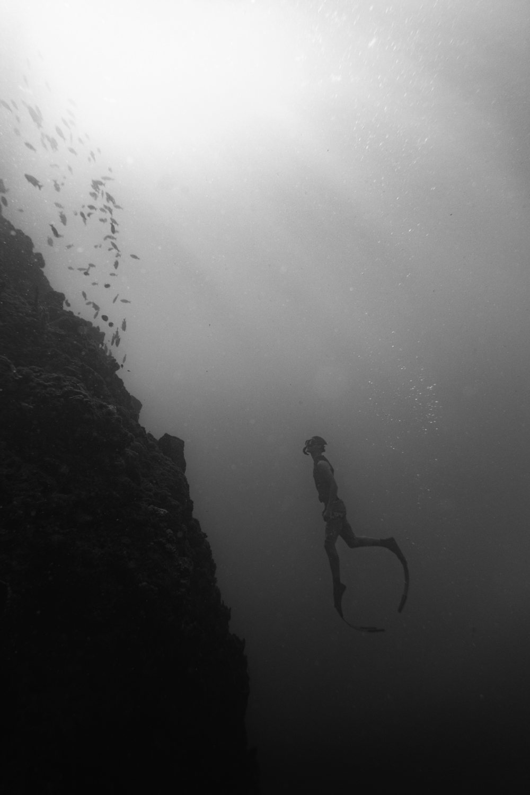
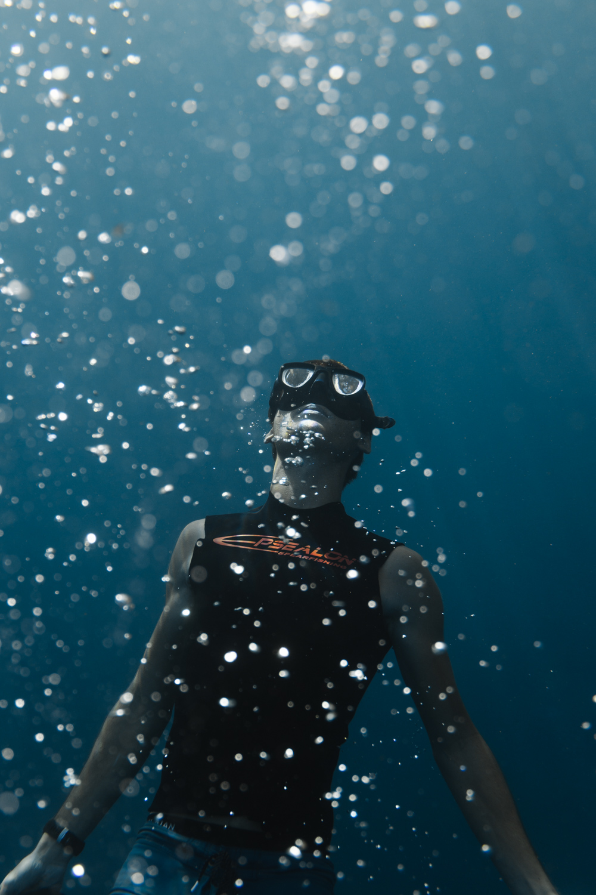
Après avoir profité du mouillage le lendemain matin, nous rejoignons KWA pour une après-midi studieuse au cours de laquelle nous nous mettons au travail sur les outils de communication de KWA. En fin de journée, alors que nous retournons au bateau, nous retrouvons l’équipage de Red Cloud avec leur équipe de bateaux stoppeurs. Ils sont 8 ! Nous décidons alors de tous marcher jusqu’au village le plus proche pour manger des bakes , sorte de beignet salé fourré au fromage, une spécialité de la Dominique. Ils prendront la mer en début de nuit direction la Martinique où ils arriveront le lendemain matin.
Lors notre arrivée à terre dimanche matin, nous rencontrons Roger qui tient l’hôtel sunset bay et est propriétaire de la bouée à laquelle nous sommes amarrés. Il est d’accord pour que nous remplissions nos bidons à un robinet de son hôtel ! Très bonne nouvelle puisque nous n’avions plus beaucoup d’eau dans nos réserves… Après un rapide remplissage d’une série de bidons, nous montons à KWA pour une journée de travail très productive. En début de soirée, Marc propose de nous emmener à la plage de Mero à quelques minutes en voiture où des petits concerts ont lieu tous les dimanches soir. Un bon moment où nous avons pu manger quelques acras de banane face au coucher de soleil en écoutant des musiciens et chanteurs locaux se relayer sur scène.
Nous ne sommes plus que six sur le chantier avec Marc. Nous passons alors nos journées entre travail sur les contenus de communication pour KWA : à savoir le montage des vidéos pour Clément, la remise en forme du site web pour Félicien et la rédaction de résumés illustrés de l’histoire de KWA pour moi, et profiter de la Dominique sur les autres moments des journées. De cette manière, on a pu faire un peu de plongée au mouillage ou encore, passer une soirée à Roseau, la capitale de l’île pour assister au carnaval. Une expérience haute en couleur !
Nous sommes partis dans l’après-midi en stop pour rejoindre Roseau. Sur place, nous découvrons des cortèges défilants par groupe ayant chacun leurs costumes et couleurs. Ils sont séparés par des camions diffusant en continu une musique assourdissante. Les groupes se déplacent ainsi dans la ville à petite vitesse en piétinant, se trémoussant et parfois dansant. En fin de soirée, les barrières entourant les groupes qui défilent sont retirées et toutes les personnes présentent dans la rue (y compris nous) se joignent au cortège pour déambuler dans les rues au rythme de la musique.
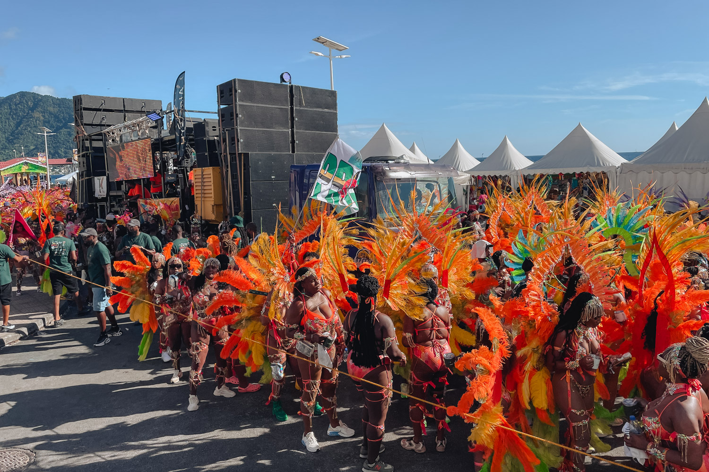
Le lendemain du carnaval, de retour chez KWA, l’ambiance est tout autre. En effet, lorsque nous arrivons, nous apprenons le décès du propriétaire de l’hôtel voisin. Sa disparition est un choc pour Marc puisque c’était un ami proche et c’est en grande partie grâce à lui que KWA a pu maintenir son activité en Dominique. Entre autres, c’est lui qui a cédé à KWA le bâtiment en cours de rénovation pour un tarif dérisoire. Nous décidons donc de désormais rester les soirs à terre pour partager nos repas avec Marc et les autres bénévoles encore présents. Ce soir-là nous nous donnons donc comme mission de faire des crêpes avec ce qu’on peut trouver dans la « cuisine » de KWA. Nous utilisons alors une demi noix de coco comme bol pour faire la pâte, dosant les proportions à l’aide d’un gobelet. Pour la cuisson, après avoir testé le woke puis ce qui semble être une grande sauteuse cabossée, notre choix se porte sur une sorte de plancha. En parallèle, Marc nous initie au « Morpiam » un jeu de dé qui voit s’affronter deux équipes. Malgré un début difficile, la journée se termine avec beaucoup de bonne ambiance et de bonne humeur autour de Marc.
Le jeudi, après 11 jours au sein de l’association, nous commençons à voir le bout de nos tâches respectives. Premier visionnage de la vidéo montée par Clément… Le résultat est incroyable et l’émotion nous fait presque monter les larmes pendant le visionnage. Avec Félicien, nous nous attaquons au sous-titrage de cette vidéo en français et en anglais. En fin de journée, Marc nous transmet sa fameuse recette et son savoir-faire pour les acras de morue ! Nous passons une excellente soirée tous les six avec Marc, Ninie et Eva. De grands sourires peuvent se lire sur tous les visages.
Vendredi matin, nous découvrons encore un moment incroyable, un patient amputé fémoral (au-dessus du genou) reçoit sa première prothèse. Nous assistons alors à ses premiers pas depuis son amputation. Un fauteuil roulant qu’il pousse lui sert d’appui, le fauteuil est contrôlé par une personne assise dedans. C’est une méthode made in Dominica by KWA qui s’adapte avec les moyens du bord. Le temps de comprendre comment la prothèse fonctionne et de prendre confiance dans ce nouvel appui et c’est parti !! Il est capable d’enchaîner quelque pas. Le slogan de KWA prend alors tout son sens : « stand up and walk ! ». Ce patient a été rigoureux et a suivi le programme de rééducation donné en amont. Ce qui lui permet de réaliser cet exploit. Il y a encore du travail pour remarcher avec assurance, mais il est sur la bonne voie !
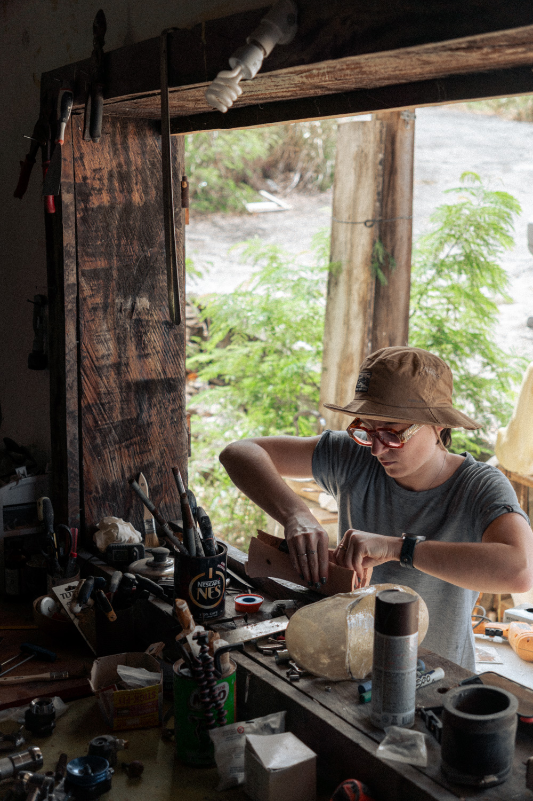
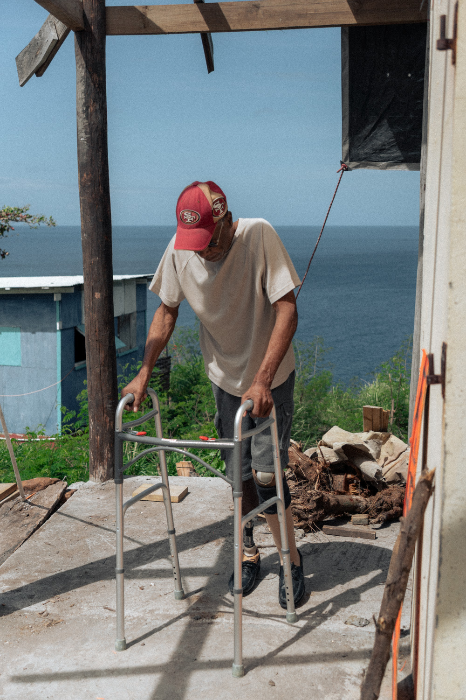
La seconde semaine se termine et nous arrivons au bout de notre travail. Nous présentons nos réalisations aux personnes présentes avant la mise en ligne. Nous sommes très contents des résultats obtenus et à ce qu’on peut voir sur les visages du public regardant les vidéos, l’objectif est bien atteint !
Dimanche matin, on se retrouve tôt à KWA pour partir tous ensemble découvrir quelques pépites de l’île, guidés par Marc. Premier arrêt, en remontant légèrement la rivière “Layou river” dont marc nous raconte l’histoire, nous atteignons un petit bassin où émerge une source d’eau chaude. Sorte de jacuzzi naturel dans lequel nous nous installons un temps, un vrai bonheur !
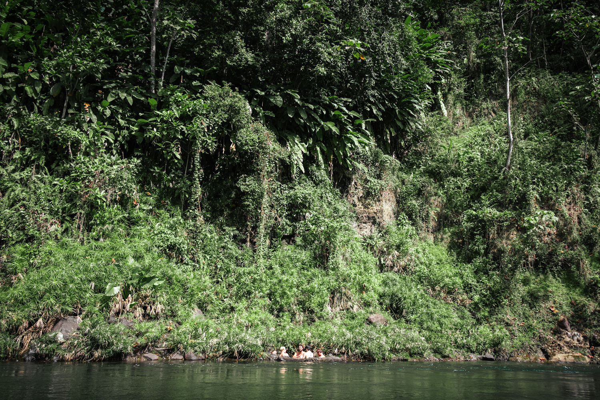
Nous poursuivons ensuite sur une route très escarpée et en mauvais état au centre de l’île. À plusieurs reprises, nous devons sortir de la voiture pour qu’elle puisse grimper les cotes rencontrées ! Nous arrivons alors dans un minuscule village. Petit stop hors du temps dans ce lieu perdu au fin-fond de la Dominique. Nous poursuivons quelques kilomètres plus loin jusqu’au départ d’un chemin menant à deux cascades. Marc nous laisse là et rentre à KWA. Nous poursuivons à 5 avec Ninie et Eva vers ces cascades où nous nous baignons avec grand plaisir dans l’eau douce.
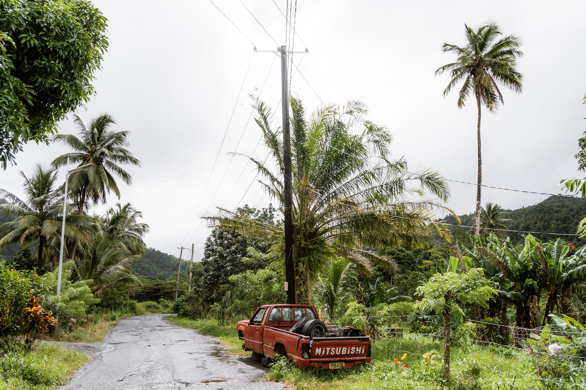
S’en suit une petite marche jusqu’au rond-point central de l’île à partir duquel nous faisons du stop pour rejoindre Roseau, la capitale. Nous y arrivons grâce à un pick-up qui nous embarque tous ainsi qu’un autre Français qui faisait lui aussi du stop. Il est venu en voilier depuis l’île de la Réunion ! Arrivés en début d’après-midi un dimanche à Roseau, pas simple pour nous de trouver à manger pour le midi, mais aussi pour le soir. En effet, nous avons prévu de bivouaquer aux Trafalgar Falls, deux majestueuses chutes d’eau sur les hauteurs de la capitale. Pour ce bivouac, nous devons être rejoints par l’équipage des Léz’arts marins (encore un équipage d’étudiants faisant le tour de l’atlantique, rencontrés à la Corogne, lors de notre première escale) ainsi que Léa, une nouvelle bénévole de KWA tout juste arrivé par le ferry.
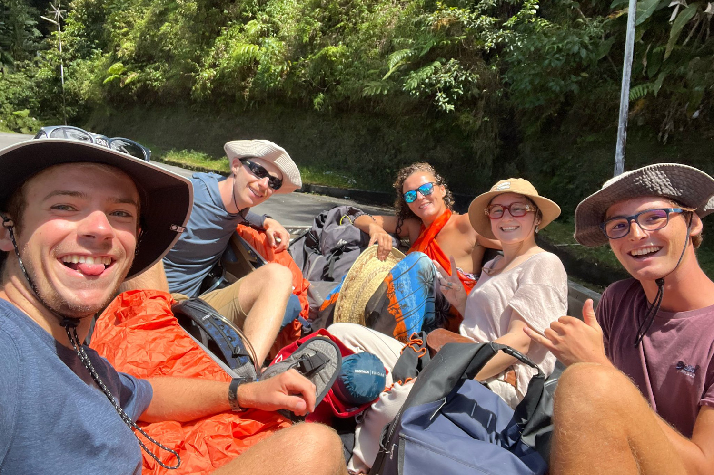
Nous arrivons sur place en fin de journée. Le lieu est grandiose ! Les couleurs de fin de journée projetées sur les falaises et la végétation entourant les énormes cascades nous laissent sans voix ! Nous crapahutons sur les cailloux pour atteindre une source d’eau (très) chaude au pied d’une des cascades, indiquée par Ninie. Une douche chaude d’eau douce !!! Quel luxe pour l’équipage Ti Zef Sails !
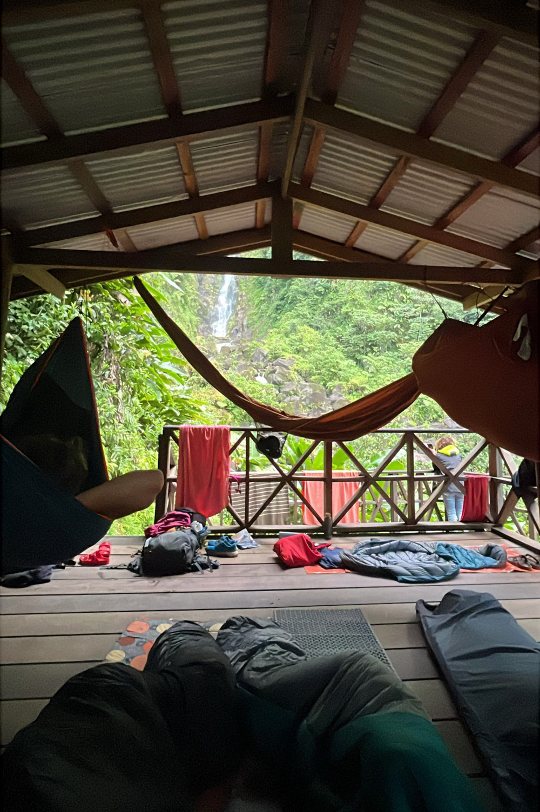
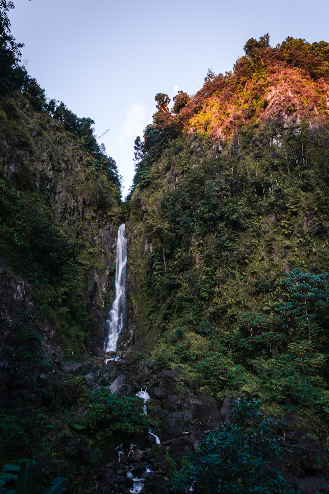
Le soir, nous partageons un grand pique-nique réalisé avec les moyens du bord pour tout le monde, avant de s’installer pour la nuit sous le carbet. Au choix en hamac, en tente ou matelas au sol. Toute la nuit, nous sommes accompagnés par le bruit assourdissant des chutes d’eau sous un ciel rempli d’étoiles. Au réveil, nouvelle baignade dans les chutes et la source d’eau chaude avant de rentrer à KWA en stop le midi afin de finaliser tout ce qu’on a fait au cours des deux dernières semaines.
C’est notre dernier soir en Dominique avec KWA, et c’est en plus l’anniversaire de Ninie avec qui nous venons de passer la semaine. Nous mettons donc en application nos apprentissages des derniers jours : nous faisons des acras pour l’apéritif (plus que validés par Marc notre professeur) puis des crêpes en dessert. Au cours de la soirée, nous réglons aussi les derniers couacs techniques suite à la publication de l’ensemble de nos travaux de la semaine.
Lundi matin, deux semaines après avoir découvert KWA, nous faisons un dernier plein d’eau chez Roger, merci à lui ! Puis nous partons vers les saintes. En partant, nous ne pouvons résister à faire un petit détour pour passer sous les falaises de KWA et les saluer à coups de corne de brume.
C’est ainsi que s’achève une expérience inoubliable, poignante, inspirante. Une escale remplie de belles rencontres, de beaux moments et d’apprentissages. Deux semaines pleines de partage, de dévouement et de sourires.
Ce qui est sûr, c’est qu’on s’en souviendra longtemps de ces moments, de ces rencontres, et des enseignements qu’on pourra en tirer. Merci la Dominique, merci KWA, et surtout merci Marc !